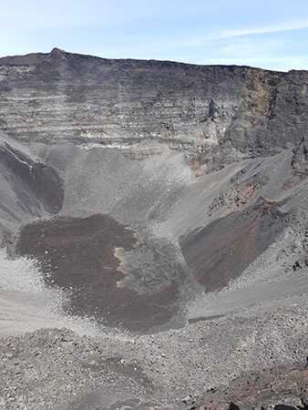
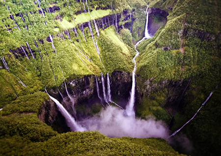
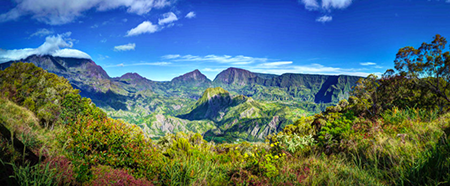
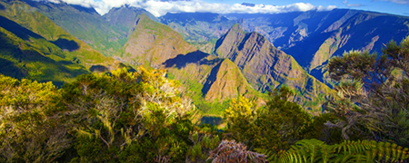
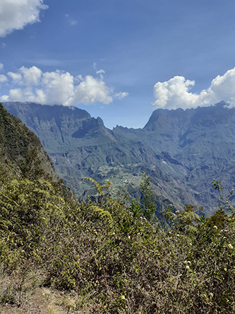
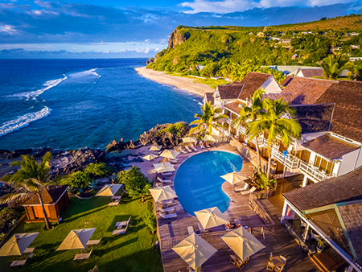
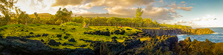
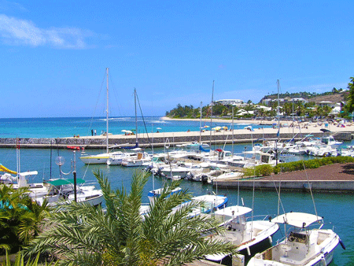
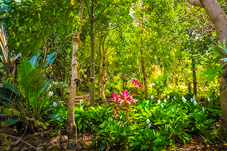

La Réunion le ti péï d'exception !
Accueil
Les lieux incontournables
Marchés et foires
Actualités
Les lieux inconcournables
Le Piton de la Fournaise

Les Cascades du trou de fer

Le Cirque du Salazie

Le Cirque de Mafate

Le Cirque de Cilaos

La plage de Boucan Cannot

La plage de l'hermitage
La plage du Cap Méchant

Le port de Saint-Gilles

Le jardin botanique du café grille
